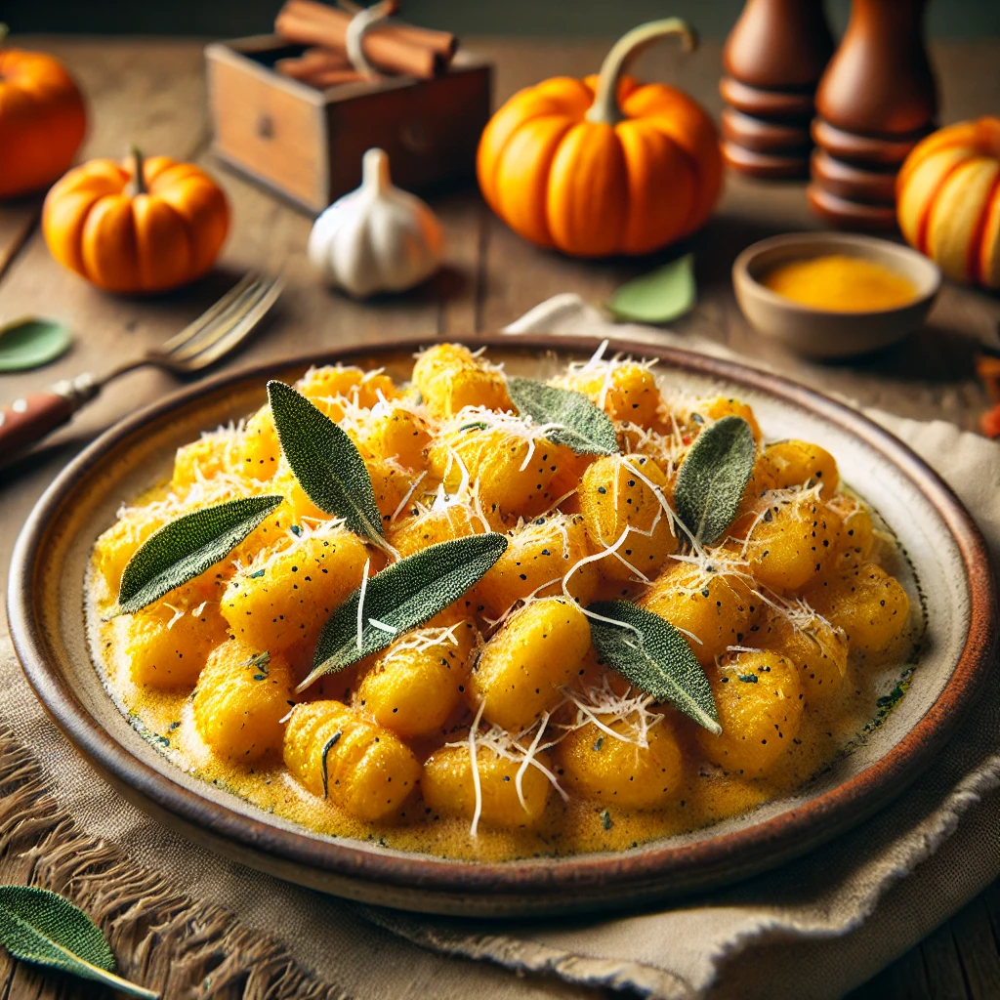

Discovering the Magic of Homemade Pumpkin Gnocchi
Hello, dear food lovers!
Today, I'm thrilled to share a recipe that's truly close to my heart—a delicate, homemade Pumpkin Gnocchi that encapsulates both the comfort of Italian cuisine and the cozy essence of fall...
Ingredients:
- 600g pumpkin puree (fresh is best, but canned works in a pinch!)
- 250g ricotta cheese, drained
- 2 large eggs
- 300g all-purpose flour, plus extra for dusting
- 75g Parmesan cheese, freshly grated
- 1 tsp nutmeg
- Salt and pepper to taste
- Sage leaves (a bunch)
- 50g unsalted butter
- Salted water for boiling
Instructions:
- Preparation of Pumpkin Puree: Roast and blend pumpkin until smooth.
- Mixing the Dough: Combine pumpkin puree, ricotta, eggs, flour, Parmesan, nutmeg, salt, and pepper.
- Forming the Gnocchi: Roll the dough into logs, cut into pieces, and shape with a fork.
- Cooking the Gnocchi: Boil in salted water until they float.
- The Sage Butter: Melt butter, add sage leaves, and cook until aromatic.
- Combining and Serving: Toss gnocchi in sage butter and serve hot with extra Parmesan.
Chef's Tips:
- For a Gluten-Free Version: Use a gluten-free flour blend.
- Vegan Adaptation: Replace ricotta and Parmesan with plant-based alternatives.
Closing Thoughts
Gathering your family and friends for a meal sharing this pumpkin gnocchi can turn any ordinary day into a special occasion...